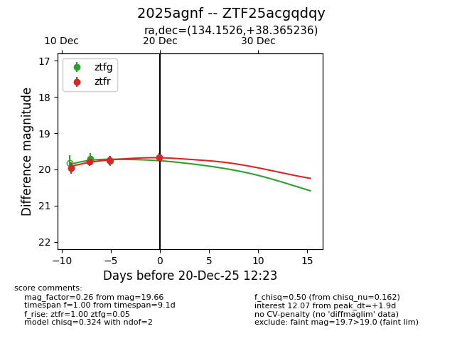
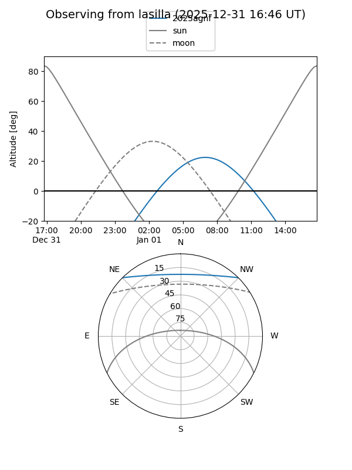
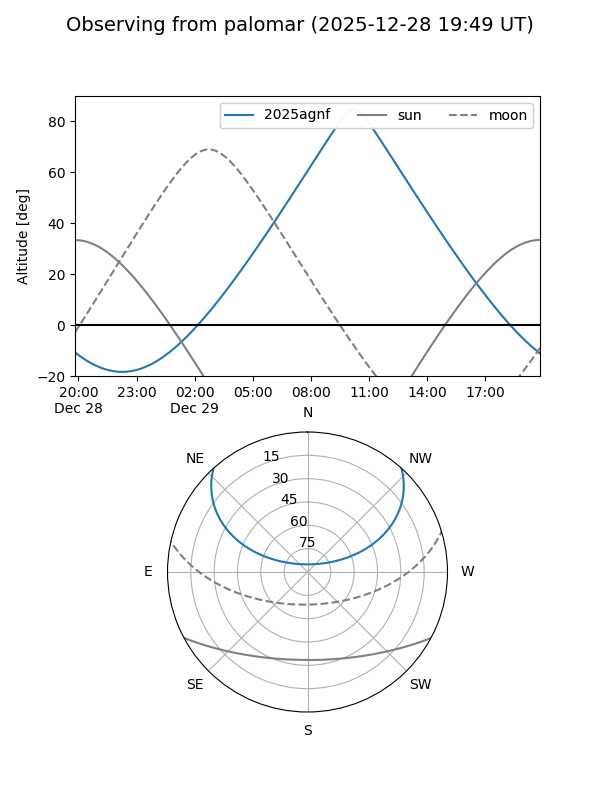

2025agnf
Target 2025agnf at 2025-12-18 11:18
Aliases and brokers:
FINK: fink-portal.org/ZTF25acgqdqy
Lasair: lasair-ztf.lsst.ac.uk/objects/ZTF25acgqdqy
ALeRCE: alerce.online/object/ZTF25acgqdqy
TNS: wis-tns.org/object/2025agnf
YSE: ziggy.ucolick.org/yse/transient_detail/2025agnf
alt names
ZTF25acgqdqy (ztf,fink_ztf)
2025agnf (tns,yse)
Coordinates:
equatorial (ra, dec) = 134.1526,+38.36524
equatorial (HMS+DMS) = 08:56:36.63,+38:21:54.85
galactic (l, b) = (184.2404,+40.20109)
Photometry
last ztfg=19.76, ztfr=19.76
2 ztfg, 3 ztfr detections
Lightcurve

Visibility


Additional plots